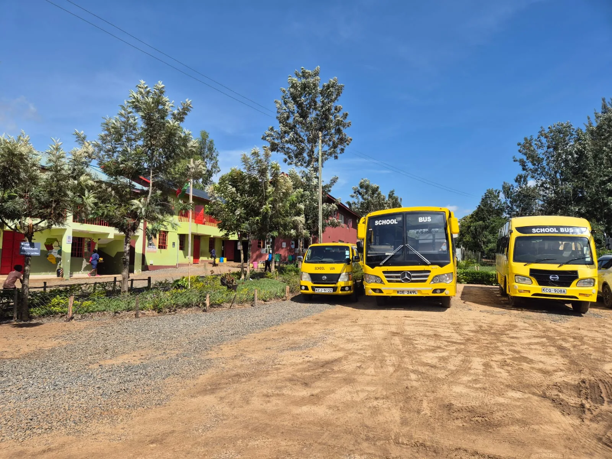

Contact and visit
We would love to hear from you.
Speak with the school team about learning pathways, admissions or arranging a visit to the NewDawn campus.
Get in touch
Start with a conversation.
NewDawn School is situated along the Bondo-Kisian Highway, just outside Bondo town in Siaya County.
Phone+254 769 924 670WhatsAppMessage the school teamEmailinfo@newdawnschool.sh.keFind NewDawn
Bondo-Kisian Highway
Use Google Maps for current directions. Confirm visiting arrangements with the school before travelling.
Open directions ↗Send an enquiry
A quick way to reach the team.
This privacy-conscious form creates a WhatsApp message on your device. The website does not submit information to a database.
Read the privacy information ↗